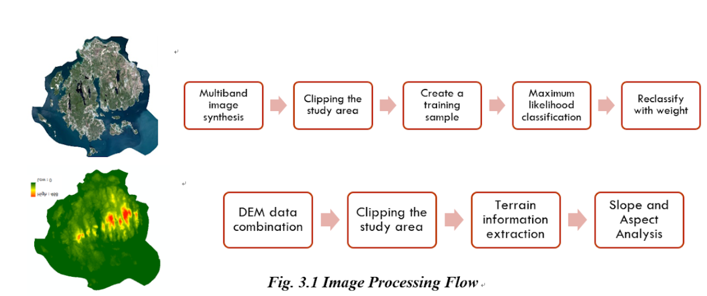
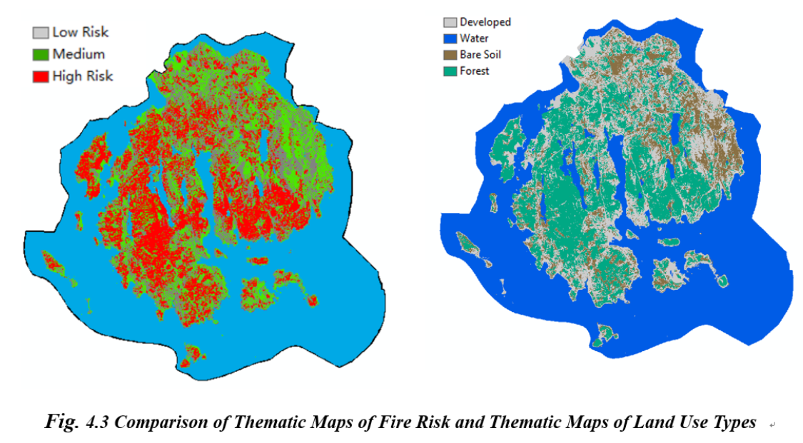
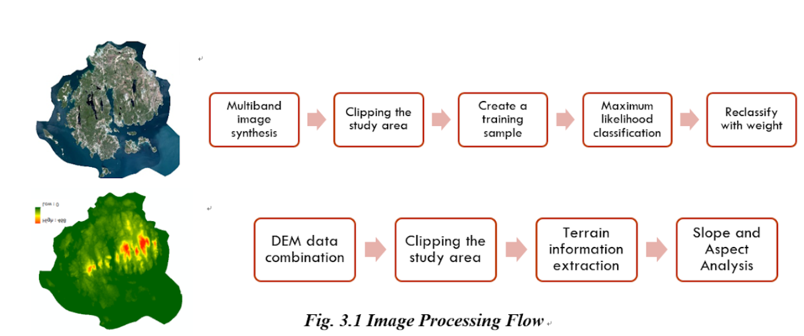
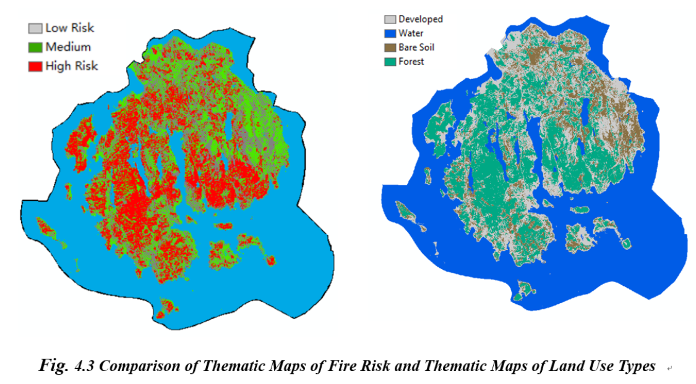
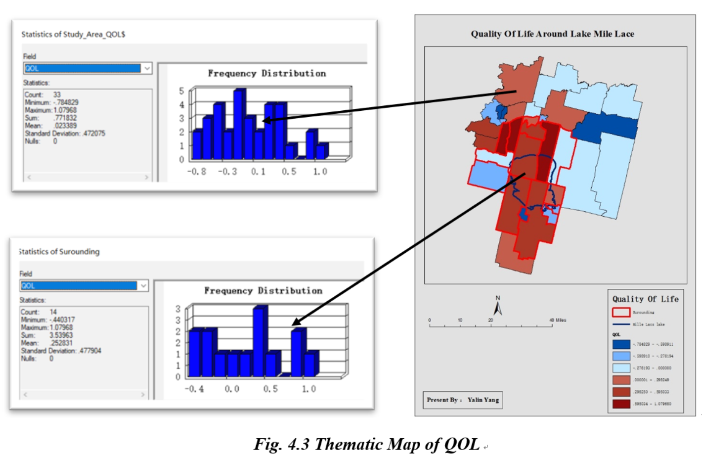
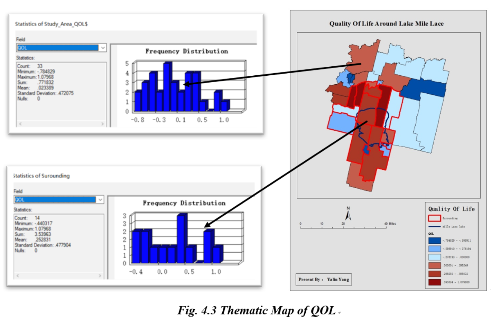

Geographic Information Science (GIS), Urban Environment and Human Networks Modeling,
Big Geospatial Data Analytics, GIS Programming, Android Developing,
AWS, Python, JAVAScript, JAVA, R
I am a Ph.D. Candidate in the
Department of Geospatial Information Sciences
at the
University of Texas at Dallas
(德州大学达拉斯分校). My research interests include Geographic Information Science
(GIS), Urban Environment, and Human Networks Modeling. More specifically, I am interested in applying geospatial big data,
machine learning, and cloud computing (e.g. AWS) to study the interaction among built environments and social events,
semantic segmentation of urban, navigation with map matching, etc.
I am also passionate about developing helpful applications for local societies. Check out my
research
for more information about what I am currently working on.
Appointments:
• 2021–now GIS Administrator, GAIA Lab, UT Dallas
• 2019–now Teaching Assistant, Department of GIScience, UT Dallas
• 2018–2019 Teaching Assistant, Department of Geography, Binghamton University (SUNY)
Geospatial Data Science: the science that investigates the 'where' and
'why' of various human and natural phenomena! As geographers, we discover deeper insights, make
better decisions, and take them to action.
GIScience
Spatial Analysis, Geostatistics, WebGIS, GIS Programming, Python, R
Software & Addins
Serverless App development (AWS), Android Development, Addins for ArcGIS
Remote Sensing
Satelite Image, Big Data, Google Earth Engine, ArcGIS
“Even in a remote learning environment Yalin Yang kept in touch with the course participants and the instructor. Yalin is knowledgeable in
machine learning techniques.”
“Students commented in the course evaluation positive on the TA's interaction with them and helpfulness. This completes the second
academic year and a substantial improvement and a development of a routine could be observed.”
“Mr. Yang is a very supportive teaching assistant and he is always punctual. He is very knowledgeable in the materials covered in class.
He will take extra time to finish the exercises and provide keys to students after class. I really appreciate his efforts to help students
learn well.”
“Yalin helped tremendously on students' assignments and debugging students' codes on an individual basis. He gave personal attention to
individual students and allowed them to move forward with their projects. His programming skills were instrumental to one of the class projects.
He did beyond what was expected of the project assignment. ”
Yalin Yang, Ph.D. Candidate
GAIA Labs' Administrator
Department of Geographical Information Science
University of Texas at Dallas
Richardson, TX 75080
Email: Yalin.Yang@UTDallas.edu
Web: https://gisyaliny.github.io/
Phone: +1-607-374-9844
Office: 2.404 Green Hall, Bryce Jordan Drive
Location: Google
Map
I look forward to hearing from you
GIScience
Areas of expertise:
Recent Research
Spatial Data Analytics
Web GIS Mapping
GIS Programming (Python, R, JavaScript)
Recent Research
Quantifying the impacts of social infrastructure on human networks (Dissertation)
Deploy and fine tuning GEOAI Foundation Model on cloud platform (I-GUIDE, Intro)
Deciphering the Impact of Built Environments on Sleep Quality (UTD Seed Program)
According to the woodland adaptive evaluation system provided by ESRI China, using the maximum likelihood method to classify the Landsat image of Acadia National Park, and assess the fire risk for each part, avoid fires like 1947.
Using the Principal component and Factor analysis method, combining multiple kinds of data, assess the quality of life for Lake Mille Lacs around Area from four aspects. Prove the economic and ecological benefits brought by the lake to the surrounding area.
Footprints - Sentiment analysis of location-based Twitter data (Intro) Families, Neighborhoods, and Sleep among Hispanic/Latinx Parents: A Social-Ecological Approach. H. Kane (PI) and May Yuan (Co-PI). UTD Seed Program for Interdisciplinary Research (SPIRe) 2021. $100,000.
Serverless App development with AWS
The structure of my serverless application is as follows: Develop REST API using AWS API Gateway to handle HTTP requests from the client side. The server-side is implemented using the AWS Lambda function. And use AWS DynamoDB as the database.
ArcGIS addins development using Python and R
Global Environment Investigation - ArcGIS tools for raster analysis (intro)
Develop one toolbox which could satisfy the common requirement when we were dealing with raster dataset.
Dislocated Water System Extraction (C#) - Develop plugins to generate river valley line automatically
(intro)
Develop an Add-in plug-in that could automatically search for the bottom edge of the river according to the water body DEM image, and extract the river profile information at equal intervals according to the user setting, and reflect the real trend of the river. Based on this, seek for the broken river system.


 



 
